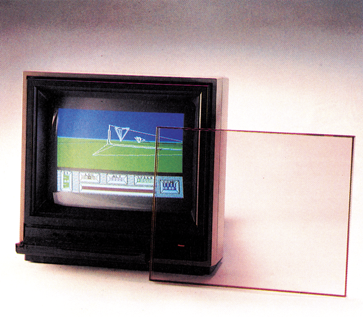
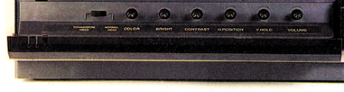
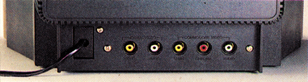
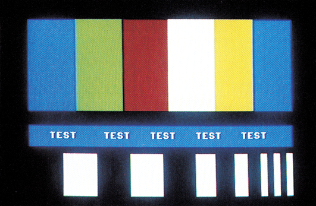
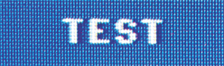
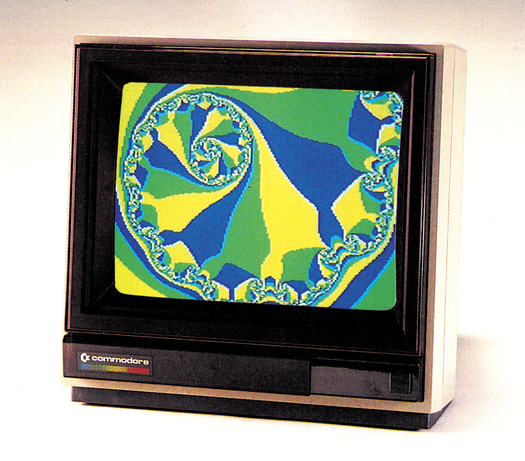
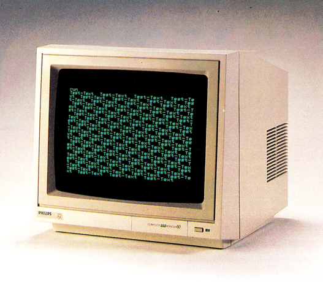

Monitore
Brandneu: der Commodore 1801. Ein Farbmonitor, der den bekannten 1702 in seiner Rolle als »C 64-Monitor« ablöst.
Commodore ist immer für eine Überraschung gut. Nachdem dem C 64 ein neues Gehäuse verpaßt wurde, präsentierte man kurz darauf einen neuen Monitor: den 1801. Erersetzt den 1702, der bisher für den C 64 der Monitor schlechthin war. Für uns war das ein Grund, ihn sofort ausführlich unter die Lupe zu nehmen. Im Anschluß daran stellen wir zwei monochrome Monitore vor, die für den Anschluß am C 64 und C 128 geeignet sind.
Der 1801: Besser als sein Vorgänger?
Dezente Farben bestimmen das Design des 1801. Neben dem in typischem Commodore-beige gehaltenen Gehäuse, fällt beim ersten Blick die dunkle Frontabdeckung aus Plexiglas auf (Bild 1). Dahinter verbirgt sich eine 14-Zoll-Farb-Röhre, deren Schlitzmaske an den 1702 erinnert. Eine Klappe verdeckt die an der Frontseite angebrachten Regler, und einen Umschalter für Composite und FBAS (Videosignal). Die entsprechenden Signal-Eingänge befinden sich an der Rückseite (Bild 2). Sie entsprechen den Ausgängen des C 64; also Lumi-nanz, Chrominanz und Audio (Tonsignal). Ein entsprechendes Anschlußkabel ist im Lieferumfang enthalten. Die Eingänge für Video und Audio blieben erhalten (zum Beispiel für den VC 20 und Video-Geräte nutzbar), sie sind ebenfalls auf der Rückseite zu finden. Nach kurzem Suchen haben wir dann auch den etwas schwach ausgefallenen Lautsprecher gefunden, der für die Geräuschkulisse von rechts sorgt.



Nachdem Helligkeit und Kontrast an den Raum angepaßt sind, erscheinen die Farben kräftig, jedoch ohne ineinander zu verschwimmen (Bild 3). Die Farbwechsel sind bis auf Rot/Blau-Kanten unkritisch und scharf. Auch bei senkrechten Schwarzweiß-Wechseln treten keine Farbverschiebungen an den Kanten auf. Die Textschärfe (Bild 4) des 1801 ist bei 40-Zeichen-Dar-stellung subjektiv als gut zu bezeichnen.


Die Kunststoff-Haube sollte man allerdings während des Betriebs abnehmen, da sie nicht entspiegelt ist und bereits nach dem ersten Tag störende Kratzer aufwies. Sieht man darüber hinweg, ist der 1801 (Bild 5) bei einem Listenpreis von etwa 800 Mark ein würdiger Nachfolger des 1702.

Neue SW-Monitore für den C 128
Problemlos anzuschließen, sowohl an den C 64 als auch an den C 128 sind monochrome Monitore. Der Philips BM 7502 (Bild 6) benötigt nur das Standard-Lumi-nanz-Signal, und ist sowohl für den C 64, als auch für den C 128 geeignet. Zum BM 7502 gibt es auch ein bernsteinfarbenes Äquivalent. Im Gegensatz zu den meisten monochromen Monitoren verfügen beide über ein eingebautes Audioteil, so daß sie auch zum Spielen hergenommen werden können.

Info: Philips, Alexanderstr, 1,2000Hamburg 1, BM 7502 grün: 299 Mark, BM 7522, 315 Mark
Commodore, Lyoner-Str., 6000 Frankfurt a.M., Tel. 0 69/66 38-0; 1802: etwa 800 Mark